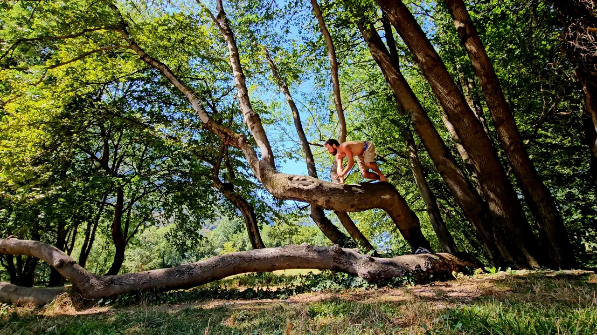

Reprise après quasiment 2 mois d'arrêt
Deux semaines tâtonnantes, un rassemblement Tarzan Movement à Barcelone, et un dossard pour le Nice by UTMB.
Quasiment deux mois sans courir depuis l'arrivée à Basse-Vallée. Le corps a eu ce qu'il demandait ; reste à savoir ce qu'il a gardé, et ce qu'il faut reconstruire. La réponse est moins décourageante que le calendrier ne le laisse penser.
Les deux premières semaines furent tâtonnantes, ponctuées notamment par un rassemblement d'entraînement intensif inter-coachs Tarzan Movement à Barcelone sur trois jours, qui m'a mis au repos pendant plusieurs jours. Rien de grave : des chaînes que la course ignore, réveillées d'un coup.

N'ayant pas été tiré au sort à l'UTMB, j'ai choisi dans la foulée de m'inscrire au Nice by UTMB, version 100M. Cela signifie 165 km et 9 000 m D+, une distance qui me met des étoiles dans les yeux. Ça y est, la saison est lancée.
Pour ce bloc, j'essaie aussi autre chose côté assiette. Le protocole ci-dessous est en test : je le documenterai jusqu'à ce qu'il soit éprouvé ou abandonné, sensations comprises.
Train-low, Eat-low
- Objectif
- Maximiser l'activation de l'AMPK et de PGC-1α.
- Protocole
- Entraînement bi-quotidien : footing à jeun de 50 min avec accélérations en montée, déjeuner cétogène, second footing d'1 h. Recharge glucidique au dîner.
Début de deuxième footing difficile, puis atténuation.
Démarche personnelle, ne constitue pas un conseil.
Rendez-vous au prochain bilan pour les premiers chiffres du bloc.
Références
- Gundersen K., Lindstedt S. L., Hoppeler H. H. (2016). Muscle memory and a new cellular model for muscle atrophy and hypertrophy. Journal of Experimental Biology, 219(2), 235–242. doi:10.1242/jeb.124495
- Encarnação I. G. A. et al. (2022). Effects of Detraining on Muscle Strength and Hypertrophy Induced by Resistance Training: A Systematic Review. Muscles, 1(1), 1–15. doi:10.3390/muscles1010001
- Marquet L.-A., Brisswalter J., Louis J., Tiollier E., Burke L. M., Hawley J. A., Hausswirth C. (2016). Enhanced Endurance Performance by Periodization of Carbohydrate Intake: Sleep Low Strategy. Medicine & Science in Sports & Exercise, 48(4). doi:10.1249/MSS.0000000000000823